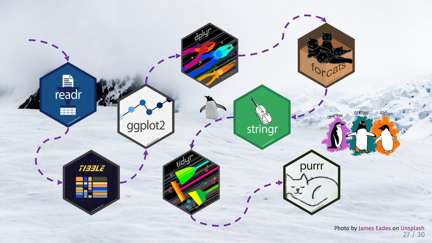

An Antarctic Tour of the Tidyverse
An introductory tidyverse tutorial created and presented for R-Ladies Chicago

Abstract
Learn how to explore and manipulate data in R with packages from the Tidyverse. We’ll introduce the 8 core packages that make up the Tidyverse and use at least one function from each package while exploring a dataset on the migration of penguins.
Date
Aug 31, 2020 5:40 PM — 7:40 PM
Location
Chicago, IL, USA (virtual)
Silvia P. Canelón
Postdoctoral Research Scientist
Biomedical engineer turned informaticist, curious about all intersections of data and society. Pronouns: she/her.